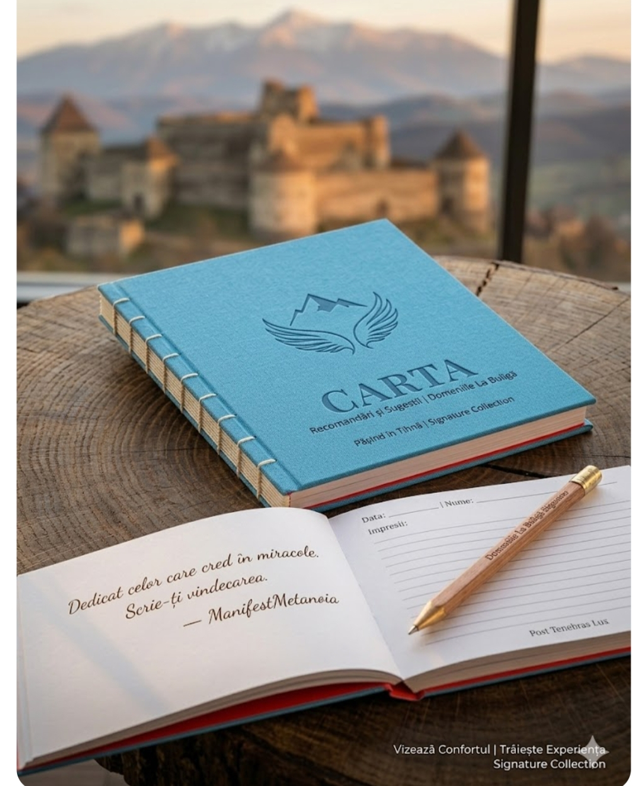

1 MAI 2026: LANSAREA MANIFEST METANOIA | TRIBUT PATRICIA

Un pelerinaj spre rânduială, isihie și regăsire. La Domeniile la Buligă, transformăm timpul în terapie și amintirile în diamante.
Un spațiu sacru pentru scris. Carta nu se comandă, ea te așteaptă la Domenii pentru a-ți transforma trăirile în nemurire.
DESCOPERĂ MAI MULT